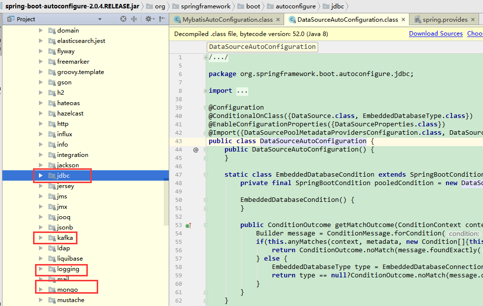

springboot帮我们做了什么
通常搭建一个基于spring的web应用，我们需要做以下工作：
1、pom文件中引入相关jar包，包括spring、springmvc、redis、mybaits、log4j、mysql-connector-java 等等相关jar ...
2、配置web.xml，Listener配置、Filter配置、Servlet配置、log4j配置、error配置 ...
3、配置数据库连接、配置spring事务
4、配置视图解析器
5、开启注解、自动扫描功能
6、配置完成后部署tomcat、启动调试
......
搭个初始项目不一会就一个小时甚至半天过去了。而用springboot后，一切都变得很简便快速。下来我们来一步步分析springboot的起步依赖与自动配置这两个核心原理。
在springboot中我们只需要引入下面简单的几步就可以完成一个ssm后台项目的初始搭建。
1、引入jar
<parent>
<groupId>org.springframework.boot</groupId>
<artifactId>spring-boot-starter-parent</artifactId>
<version>2.0.4.RELEASE</version>
<relativePath/> <!-- lookup parent from repository -->
</parent><!--mybatis 开发包-->
<dependency>
<groupId>org.mybatis.spring.boot</groupId>
<artifactId>mybatis-spring-boot-starter</artifactId>
<version>1.3.2</version>
</dependency><!--springboot web模块支持-->
<dependency>
<groupId>org.springframework.boot</groupId>
<artifactId>spring-boot-starter-web</artifactId></dependency><dependency>
<groupId>mysql</groupId>
<artifactId>mysql-connector-java</artifactId>
<scope>runtime</scope>
</dependency><!--druid 的数据源-->
<dependency>
<groupId>com.alibaba</groupId>
<artifactId>druid</artifactId>
<version>1.0.31</version>
</dependency>
spring-boot-starter-web包自动帮我们引入了web模块开发需要的相关jar包，
mybatis-spring-boot-starter帮我们引入了dao开发相关的jar包。
spring-boot-starter-xxx是官方提供的starter，xxx-spring-boot-starter是第三方提供的starter。
如下截图：
可以看出在这个mybatis-spring-boot-starter 中，并没有任何源码，只有一个pom文件，它的作用就是帮我们引入了相关jar包。
2、配置数据源
spring:
datasource:
username: root
password: root
driver-class-name: com.mysql.jdbc.Driver
type: com.alibaba.druid.pool.DruidDataSource
dbcp2:
min-idle: 5
initial-size: 5
max-total: 5
max-wait-millis: 200
stater机制帮我们完成了项目起步所需要的的相关jar包。那问题又来了，传统的spring应用中不是要在application.xml中配置很多bean的吗，比如dataSource的配置，transactionManager的配置 ... springboot是如何帮我们完成这些bean的配置的？下面我们来分析这个过程
基于java代码的bean配置
以mybatis为例，在上面的截图中，我们发下mybatis-spring-boot-starter这个包帮我们引入了mybatis-spring-boot-autoconfigure这个包，如下图：
里面有MybatisAutoConfiguration这个类，打开这个类看看有什么东西。
熟悉@Configuration&、@Bean这两个bean的同学或许已经知道了。这两个注解一起使用就可以创建一个基于java代码的配置类，可以用来替代相应的xml配置文件。
@Configuration注解的类可以看作是能生产让Spring IoC容器管理的Bean实例的工厂。
@Bean注解告诉Spring，一个带有@Bean的注解方法将返回一个对象，该对象应该被注册到spring容器中。
传统的基于xml的bean配置方法如下：
<beans>
<bean id = "car" class="com.itpsc.Car">
<property name="wheel" ref = "wheel"></property>
</bean>
<bean id = "wheel" class="com.itpsc.Wheel"></bean>
</beans>
相当于用基于java代码的配置方式：
@Configuration
public class Conf {
@Bean
public Car car() {
Car car = new Car();
car.setWheel(wheel());
return car;
}
@Bean
public Wheel wheel() {
return new Wheel();
}
}
所以上面的MybatisAutoConfiguration这个类，自动帮我们生成了SqlSessionFactory这些Mybatis的重要实例并交给spring容器管理，从而完成bean的自动注册。
自动配置条件依赖
从MybatisAutoConfiguration这个类中使用的注解可以看出，要完成自动配置是有依赖条件的。
@Configuration
@ConditionalOnClass({SqlSessionFactory.class, SqlSessionFactoryBean.class})
@ConditionalOnBean({DataSource.class})
@EnableConfigurationProperties({MybatisProperties.class})
@AutoConfigureAfter({DataSourceAutoConfiguration.class})
public class MybatisAutoConfiguration {
....
}
这些是springboot特有的，常见的条件依赖注解有：
@ConditionalOnBean，仅在当前上下文中存在某个bean时，才会实例化这个Bean。
@ConditionalOnClass，某个class位于类路径上，才会实例化这个Bean。
@ConditionalOnExpression，当表达式为true的时候，才会实例化这个Bean。
@ConditionalOnMissingBean，仅在当前上下文中不存在某个bean时，才会实例化这个Bean。
@ConditionalOnMissingClass，某个class在类路径上不存在的时候，才会实例化这个Bean。
@ConditionalOnNotWebApplication，不是web应用时才会实例化这个Bean。
@AutoConfigureAfter，在某个bean完成自动配置后实例化这个bean。
@AutoConfigureBefore，在某个bean完成自动配置前实例化这个bean。
所以要完成Mybatis的自动配置，需要在类路径中存在SqlSessionFactory.class、SqlSessionFactoryBean.class这两个类，需要存在DataSource这个bean且这个bean完成自动注册。
进入DataSourceAutoConfiguration这个类，可以看到这个类属于这个包：
org.springframework.boot.autoconfigure.jdbc
这个包又属于spring-boot-autoconfigure-2.0.4.RELEASE.jar这个包，自动配置这个包帮们引入了jdbc、kafka、logging、mail、mongo等包。很多包需要我们引入相应jar后自动配置才生效。

bean参数获取
到此我们已经知道了bean的配置过程，但是还没有看到springboot是如何读取yml或者properites配置文件的的属性来创建数据源的？
在DataSourceAutoConfiguration类里面，我们注意到使用了EnableConfigurationProperties这个注解。
@Configuration
@ConditionalOnClass({DataSource.class, EmbeddedDatabaseType.class})
@EnableConfigurationProperties({DataSourceProperties.class})
@Import({DataSourcePoolMetadataProvidersConfiguration.class, DataSourceInitializationConfiguration.class})
public class DataSourceAutoConfiguration {
...
}
DataSourceProperties中封装了数据源的各个属性，且使用了注解ConfigurationProperties指定了配置文件的前缀。
@ConfigurationProperties(prefix = "spring.datasource")
public class DataSourceProperties implements BeanClassLoaderAware, InitializingBean {
private ClassLoader classLoader;
private String name;
private boolean generateUniqueName;
private Class<? extends DataSource> type;
private String driverClassName;
private String url;
private String username;
private String password;
private String jndiName;
...
}
@EnableConfigurationProperties与@ConfigurationProperties这两个注解有什么用呢？我们先看一个例子：
@Component
@ConfigurationProperties(prefix="spring.datasource")
public class PropertiesBean {
private String url;
private String username;
private String password;
//省略getter、setter... @Override
public String toString() {
return "PropertiesBean{" +
"url='" + url + '\'' +
", username='" + username + '\'' +
", password='" + password + '\'' +
'}';
}
}
@SpringBootApplication
@MapperScan("com.itpsc.mapper*")
@EnableConfigurationProperties
public class SpringbootMybatisDemoApplication {
public static void main(String[] args) {
//SpringApplication.run(SpringbootMybatisDemoApplication.class, args);
ConfigurableApplicationContext context = SpringApplication.run(SpringbootMybatisDemoApplication.class, args);
//获取yml配置转换后的bean
System.out.println("----------------------"+context.getBean(PropertiesBean.class));
context.close();
}
}
运行结果：
从运行结果可以看出@ConfigurationProperties与@EnableConfigurationPropertie的作用就是：
@ConfigurationProperties注解的作用是把yml或者properties配置文件转化为bean。
@EnableConfigurationProperties注解的作用是使@ConfigurationProperties注解生效。如果只配置@ConfigurationProperties注解，在spring容器中是获取不到yml或者properties配置文件转化的bean的。
通过这种方式，把yml或者properties配置参数转化为bean，这些bean又是如何被发现与加载的？
bean发现
springboot默认扫描启动类所在的包下的主类与子类的所有组件，但并没有包括依赖包的中的类，那么依赖包中的bean是如何被发现和加载的？
我们通常在启动类中加@SpringBootApplication这个注解，点进去看
@Target({ElementType.TYPE})
@Retention(RetentionPolicy.RUNTIME)
@Documented
@Inherited
@SpringBootConfiguration
@EnableAutoConfiguration
@ComponentScan(
excludeFilters = {
@Filter(
type = FilterType.CUSTOM,
classes = {TypeExcludeFilter.class}
), @Filter(
type = FilterType.CUSTOM,
classes = {AutoConfigurationExcludeFilter.class}
)
}
)
public @interface SpringBootApplication {
...
}
实际上重要的只有三个Annotation：
@Configuration（@SpringBootConfiguration里面还是应用了@Configuration）
@EnableAutoConfiguration
@ComponentScan
@Configuration的作用上面我们已经知道了，被注解的类将成为一个bean配置类。
@ComponentScan的作用就是自动扫描并加载符合条件的组件，比如@Component和@Repository等，最终将这些bean定义加载到spring容器中。
@EnableAutoConfiguration 这个注解的功能很重要，借助@Import的支持，收集和注册依赖包中相关的bean定义。
@Target({ElementType.TYPE})
@Retention(RetentionPolicy.RUNTIME)
@Documented
@Inherited
@AutoConfigurationPackage
@Import({AutoConfigurationImportSelector.class})
public @interface EnableAutoConfiguration {
String ENABLED_OVERRIDE_PROPERTY = "spring.boot.enableautoconfiguration";
Class<?>[] exclude() default {};
String[] excludeName() default {};
}
如上源码，@EnableAutoConfiguration注解引入了@AutoConfigurationPackage和@Import这两个注解。@AutoConfigurationPackage的作用就是自动配置的包，@Import导入需要自动配置的组件。
进入@AutoConfigurationPackage，发现也是引入了@Import注解
@Target({ElementType.TYPE})
@Retention(RetentionPolicy.RUNTIME)
@Documented
@Inherited
@Import({Registrar.class})
public @interface AutoConfigurationPackage {
}
static class Registrar implements ImportBeanDefinitionRegistrar, DeterminableImports {
Registrar() {
}
public void registerBeanDefinitions(AnnotationMetadata metadata, BeanDefinitionRegistry registry) {
AutoConfigurationPackages.register(registry,
new String[]{(new AutoConfigurationPackages.PackageImport(metadata)).getPackageName()});
}
public Set<Object> determineImports(AnnotationMetadata metadata) {
return Collections.singleton(new AutoConfigurationPackages.PackageImport(metadata));
}
}
new AutoConfigurationPackages.PackageImport(metadata)).getPackageName()
new AutoConfigurationPackages.PackageImport(metadata)
这两句代码的作用就是加载启动类所在的包下的主类与子类的所有组件注册到spring容器，这就是前文所说的springboot默认扫描启动类所在的包下的主类与子类的所有组件。
那问题又来了，要搜集并注册到spring容器的那些beans来自哪里？
进入 AutoConfigurationImportSelector类，
public class AutoConfigurationImportSelector implements DeferredImportSelector, BeanClassLoaderAware, ResourceLoaderAware, BeanFactoryAware, EnvironmentAware, Ordered {
private static final String[] NO_IMPORTS = new String[0];
...
public String[] selectImports(AnnotationMetadata annotationMetadata) {
if(!this.isEnabled(annotationMetadata)) {
return NO_IMPORTS;
} else {
AutoConfigurationMetadata autoConfigurationMetadata = AutoConfigurationMetadataLoader.loadMetadata(this.beanClassLoader);
AnnotationAttributes attributes = this.getAttributes(annotationMetadata);
List configurations = this.getCandidateConfigurations(annotationMetadata, attributes);
configurations = this.removeDuplicates(configurations);
Set exclusions = this.getExclusions(annotationMetadata, attributes);
this.checkExcludedClasses(configurations, exclusions);
configurations.removeAll(exclusions);
configurations = this.filter(configurations, autoConfigurationMetadata);
this.fireAutoConfigurationImportEvents(configurations, exclusions);
return StringUtils.toStringArray(configurations);
}
}
...
protected List<String> getCandidateConfigurations(AnnotationMetadata metadata, AnnotationAttributes attributes) {
List configurations = SpringFactoriesLoader.loadFactoryNames(this.getSpringFactoriesLoaderFactoryClass(),
this.getBeanClassLoader());
Assert.notEmpty(configurations, "No auto configuration classes found in META-INF/spring.factories. "
+"If you are using a custom packaging, make sure that file is correct.");
return configurations;
}
...
}
SpringFactoriesLoader.loadFactoryNames方法调用loadSpringFactories方法从所有的jar包中读取META-INF/spring.factories文件信息。
private static Map<String, List<String>> loadSpringFactories(@Nullable ClassLoader classLoader) {
MultiValueMap result = (MultiValueMap)cache.get(classLoader);
if(result != null) {
return result;
} else {
try {
Enumeration ex = classLoader != null?
classLoader.getResources("META-INF/spring.factories"):ClassLoader.getSystemResources("META-INF/spring.factories");
LinkedMultiValueMap result1 = new LinkedMultiValueMap();
while(ex.hasMoreElements()) {
URL url = (URL)ex.nextElement();
UrlResource resource = new UrlResource(url);
Properties properties = PropertiesLoaderUtils.loadProperties(resource);
Iterator var6 = properties.entrySet().iterator();
while(var6.hasNext()) {
Entry entry = (Entry)var6.next();
result1.addAll((String)entry.getKey(), factoryClassNames);
}
}
cache.put(classLoader, result1);
return result1;
} catch (IOException var9) {
throw new IllegalArgumentException("Unable to load factories from location [META-INF/spring.factories]", var9);
}
}
}
下面是spring-boot-autoconfigure这个jar中spring.factories文件部分内容，其中有一个key为org.springframework.boot.autoconfigure.EnableAutoConfiguration的值定义了需要自动配置的bean，通过读取这个配置获取一组@Configuration类。
org.springframework.boot.autoconfigure.AutoConfigurationImportListener=\
org.springframework.boot.autoconfigure.condition.ConditionEvaluationReportAutoConfigurationImportListener
# Auto Configuration Import Filters
org.springframework.boot.autoconfigure.AutoConfigurationImportFilter=\
org.springframework.boot.autoconfigure.condition.OnClassCondition
# Auto Configure
org.springframework.boot.autoconfigure.EnableAutoConfiguration=\
org.springframework.boot.autoconfigure.admin.SpringApplicationAdminJmxAutoConfiguration,\
org.springframework.boot.autoconfigure.aop.AopAutoConfiguration,\
org.springframework.boot.autoconfigure.amqp.RabbitAutoConfiguration,\
org.springframework.boot.autoconfigure.batch.BatchAutoConfiguration,\
org.springframework.boot.autoconfigure.cache.CacheAutoConfiguration,\
每个xxxAutoConfiguration都是一个基于java的bean配置类。实际上，这些xxxAutoConfiguratio不是所有都会被加载，会根据xxxAutoConfiguration上的@ConditionalOnClass 等条件判断是否加载。
private static <T> T instantiateFactory(String instanceClassName, Class<T> factoryClass, ClassLoader classLoader) {
try {
Class ex = ClassUtils.forName(instanceClassName, classLoader);
if(!factoryClass.isAssignableFrom(ex)) {
throw new IllegalArgumentException("Class [" + instanceClassName + "] is not assignable to ["
+ factoryClass.getName() + "]");
} else {
return ReflectionUtils.accessibleConstructor(ex, new Class[0]).newInstance(new Object[0]);
}
} catch (Throwable var4) {
throw new IllegalArgumentException("Unable to instantiate factory class: " + factoryClass.getName(), var4);
}
}
如上代码段，通过反射机制将spring.factories中@Configuration类实例化为对应的java实列。到此我们已经知道怎么发现要自动配置的bean了，最后一步就是怎么样将这些bean加载到spring容器。
bean加载
如果要让一个普通类交给Spring容器管理，通常有以下方法：
1、使用 @Configuration与@Bean 注解
2、使用@Controller @Service @Repository @Component 注解标注该类，然后启用@ComponentScan自动扫描
3、使用@Import 方法
springboot中使用了@Import 方法
@EnableAutoConfiguration注解中使用了@Import({AutoConfigurationImportSelector.class})注解，AutoConfigurationImportSelector实现了DeferredImportSelector接口，
DeferredImportSelector接口继承了ImportSelector接口，ImportSelector接口只有一个selectImports方法。
public class AutoConfigurationImportSelector implements DeferredImportSelector{
...
public String[] selectImports(AnnotationMetadata annotationMetadata) {
if(!this.isEnabled(annotationMetadata)) {
return NO_IMPORTS;
} else {
AutoConfigurationMetadata autoConfigurationMetadata = AutoConfigurationMetadataLoader.loadMetadata(this.beanClassLoader);
AnnotationAttributes attributes = this.getAttributes(annotationMetadata);
List configurations = this.getCandidateConfigurations(annotationMetadata, attributes);
configurations = this.removeDuplicates(configurations);
Set exclusions = this.getExclusions(annotationMetadata, attributes);
this.checkExcludedClasses(configurations, exclusions);
configurations.removeAll(exclusions);
configurations = this.filter(configurations, autoConfigurationMetadata);
this.fireAutoConfigurationImportEvents(configurations, exclusions);
return StringUtils.toStringArray(configurations);
}
}
...
}
public interface DeferredImportSelector extends ImportSelector {
@Nullable
default Class<? extends DeferredImportSelector.Group> getImportGroup() {
return null;
}
public interface Group {...}
}
public interface ImportSelector {
String[] selectImports(AnnotationMetadata var1);
}
我们先通过一个简单例子看看@Import注解是如何将bean导入到spring容器的。
1、新建一个bean
public class User {
private Long id;
private String name;
private String password;
private String phone;
...
}
2、创建一个ItpscSelector类继承ImportSelector接口并实现selectImports方法
public class ItpscSelector implements ImportSelector {
public String[] selectImports(AnnotationMetadata importingClassMetadata) {
return new String[]{"com.itpsc.entity.User"};
}
}
3、创建ImportConfig类，使用@Configuration、@Import(ItpscSelector.class)注解。
@Configuration
@Import(ItpscSelector.class)
public class ImportConfig {
}
4、从容器获取bean
@RunWith(SpringRunner.class)
@SpringBootTest
public class ImportSelectorTests {
@Test
public void testSelectImport() {
ApplicationContext ctx = new AnnotationConfigApplicationContext(ImportConfig.class);
String[] beanDefinitionNames = ctx.getBeanDefinitionNames();
for (String name : beanDefinitionNames) {
System.out.println(name);
}
}
}
运行结果：
org.springframework.context.annotation.internalConfigurationAnnotationProcessor
org.springframework.context.annotation.internalAutowiredAnnotationProcessor
org.springframework.context.annotation.internalRequiredAnnotationProcessor
org.springframework.context.annotation.internalCommonAnnotationProcessor
org.springframework.context.event.internalEventListenerProcessor
org.springframework.context.event.internalEventListenerFactory
importConfig
com.itpsc.entity.User
很直观，selectImports方法返回一组bean，@EnableAutoConfiguration注解借助@Import注解将这组bean注入到spring容器中，springboot正式通过这种机制来完成bean的注入的。
我们可以将自动配置的关键几步以及相应的注解总结如下：
1、@Configuration&与@Bean->基于java代码的bean配置
2、@Conditional->设置自动配置条件依赖
3、@EnableConfigurationProperties与@ConfigurationProperties->读取配置文件转换为bean。
4、@EnableAutoConfiguration、@AutoConfigurationPackage 与@Import->实现bean发现与加载。